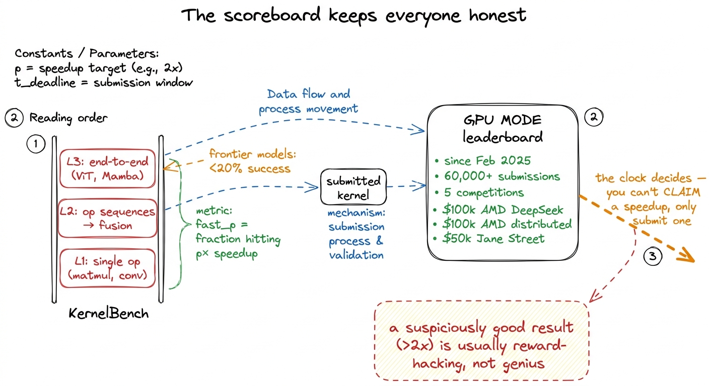
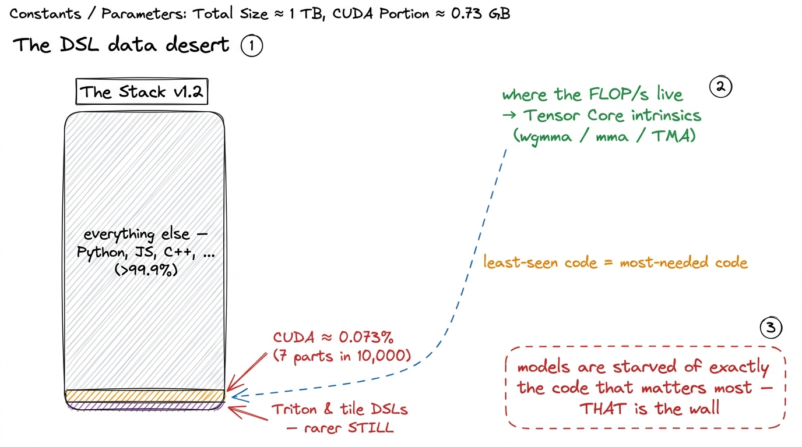
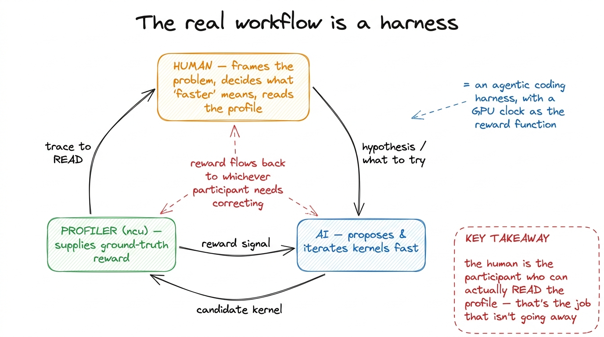

Kevin, RL & what's still human
Everything else on this site is a human climbing the GEMM ladder by hand. State a hypothesis. Write the smallest kernel that tests it. Read the profiler. Let the bottleneck pick the next move. Repeat. It is slow, it is careful, and — if you stand back and squint — it looks exactly like the kind of loop a machine ought to be able to run. So here is the question this article is about, the one a hiring manager will actually ask you in 2026:
Can a model just do this?
Can you point a language model at "make this matmul faster on an H100" and get back something that beats what you would have written by hand? Not a plausible-looking kernel. A faster one, verified, on a real clock.
The honest answer, after a year of very serious attempts by very serious labs, is partly. And the shape of that "partly" — where it works, where it hits a wall, and why the wall is exactly where it is — turns out to be one of the most instructive things you can learn about both GPUs and language models at once. This article walks through the two results that moved the field, the leaderboard that made them measurable, and the specific wall everyone keeps hitting. Then I want to be precise about the part that is still, stubbornly, a human job — because that part is the whole reason the rest of this site exists.1 The framing and most of the numbers here come from Simon Guo's "Automated GPU Kernel Generation" (Oct 2025) and the GPU MODE lecture series. This is a survey article, not a worklog — I did not train any of these models. But the loop they use is the same predict-measure-repeat loop the rest of the site is built on, so it belongs here.
Before we get to any of that, we need one idea. It is the idea the entire field rests on, and if you get it, everything after is easy.
First, what is a "reward," and why do kernels have a good one?
Let me start from zero, because this is the load-bearing concept and it is worth slowing down for.
When you train a language model to be good at something, you need a way to tell it "that was good" or "that was bad." That signal is called a reward. For most things we ask models to do, the reward is a nightmare to define. Ask a model to "write a good essay" — and now who decides? Good is a matter of taste. You would have to pay humans to read essays and rate them, the ratings would disagree, and you would run out of money long before you ran out of essays. The reward is expensive, slow, and fuzzy.
Now here is the surprising thing about a GPU kernel. It has a reward that is none of those things. It is cheap, fast, and sharp as a knife. A kernel gives you a grade for free, because a kernel has two properties an essay never will.
Property one: correctness is checkable. A kernel is supposed to compute something — say, a matrix multiply. You already have a reference that computes the right answer: plain PyTorch. So you run the model's kernel and the PyTorch version on the same random inputs, and you check that the outputs match within a small numerical tolerance. Do that not once but across many random input tensors — this is called fuzzing — and a kernel that got lucky on one input but is secretly wrong gets caught and scores zero. Correct is now a hard, automatic pass/fail. No human read anything.
Property two: speed is a number. Time the model's kernel. Time the PyTorch baseline. Divide. You get a number like 1.10x, meaning "ten percent faster than PyTorch." That number is not up for debate, not a matter of taste. It is a stopwatch reading.
Put those together and you have what the field calls a verifiable reward: correct AND fast, where both halves are measured by a machine. This is the holy grail for reinforcement learning, because it means you can generate reward signal automatically, at scale, with no human in the loop. You do not need a labeled dataset. You need a compiler, a GPU, and a stopwatch. Let me draw the loop, because we will reuse this exact picture the whole rest of the way.
 figure rendering · A kernel is a rare thing in ML: a task whose reward you can compute au
figure rendering · A kernel is a rare thing in ML: a task whose reward you can compute auNotice the warning in that takeaway box, because it is the first place people go wrong. Suppose you reward only correctness. What does a model learn? The safest possible behavior: emit something that obviously works and is obviously slow. Why take a risk on a clever tiling scheme that might be wrong, when a dead-simple triple-nested loop always passes? You would train a very confident writer of naive kernels — the 1.3%-of-cuBLAS variety we started the GEMM ladder with. The speed term is not optional garnish. It is half the reward, and without it the whole thing collapses into "correct and useless."
Hold that loop in your head. Everything below is a variation on it.
Kevin: don't reward the answer, reward the loop
The first result worth internalizing is a model called Kevin. It is built on QwQ-32B — a 32-billion-parameter reasoning model from the Qwen family — as its starting point, or in RL language, its base policy.2 Kevin came out of a collaboration involving Cognition AI. The "32B" matters for the punchline later: it is small by frontier standards, and it still wins on this task. Keep that number in mind. But the base model is not the point. The point is a single idea about how you train on this task, and it is the kind of idea that seems obvious once said and was not obvious at all.
Here is the idea. Watch how a human actually writes a fast kernel. Do you sit down and type the final warptiled, double-buffered, bank-conflict-free version in one go? Of course not. Nobody does. You write a first version. You profile it. The profiler says "you are occupancy-limited" or "you have shared-memory bank conflicts." You read that, you revise, you profile again. The skill is not in the first kernel. The skill is in the revising — in reading a profile and knowing what to change next.
So now ask the natural question: if the skill lives in the revision loop, what happens if you train the model over a single turn — one prompt, one kernel, one reward? You throw away the exact part of the task that contains the skill. You are grading the model on its first draft, when the whole job is the editing.
Kevin's answer is to train multi-turn. The model writes a kernel. It gets back not just "pass/fail" but the profiling feedback — the same occupancy and bank-conflict signals a human would read — folded back into its context. Then it writes a better one. And another. Across several rounds. Critically, the reward is propagated back through the whole trajectory, so the model is not being taught "write a good kernel." It is being taught "run a good optimization loop." That is a far closer match to what the job actually is. Let me draw the difference, because the before/after is the whole story.
 figure rendering · Single-turn training grades the first draft and discards the editing.
figure rendering · Single-turn training grades the first draft and discards the editing. Now the numbers, because they are the reason people paid attention. On the correctness axis, Kevin took the base QwQ-32B from 56% correct to 82% correct on the benchmark tasks. That is a big jump, but it is not the headline. The headline is the other axis. Mean speedup over PyTorch eager went from 0.53x to 1.10x.
Stop and read 0.53x slowly, because it is easy to skim past and it is quietly the most important number here. 0.53x means the starting model's kernels were, on average, roughly half the speed of just calling PyTorch. Think about how damning that is. The model wrote a custom kernel — the whole point of which is to be faster — and it came out twice as slow as the library it was trying to beat. This is not a quirk of a bad model. This is normal. A naive hand-rolled kernel is almost always slower than the library, which is the entire reason the GEMM ladder exists and takes ten rungs to climb. So crossing 1.0x is a real milestone: it means the trained model, on average, finally writes a kernel that is faster than the thing it was trying to replace, rather than a slower reimplementation of it.
And then the part that made the field sit up. Kevin's 1.10x beat OpenAI o1-mini at 0.78x on mean speedup. Sit with that. A 32-billion-parameter open model, specialized by RL on a verifiable reward, out-ran a much larger, more general frontier reasoning model on this specific job — and o1-mini was still stuck below 1.0x, still writing kernels slower than PyTorch on average. That is the lesson the field took away, and it is worth stating as a rule:
For a task with a clean, verifiable reward, targeted RL beats raw scale. The specialist with a stopwatch beats the generalist with more parameters. This will not be true for every task. It is true for exactly the tasks where you can measure the thing you care about, cheaply and correctly — which is precisely what a kernel gives you.
KernelBook: the other way to get signal is to manufacture the data
Kevin attacks the problem from the reward side — better training signal on the same data. The second big result attacks it from the data side, and the trick is genuinely clever because it needs no human-written kernels at all. Zero. Let me build up to why that is even possible, starting from a question.
Suppose you wanted to teach a model to write good kernels the ordinary way — supervised, learning from examples. You would need a big pile of (PyTorch program, fast kernel) pairs. Where would you get them? Humans would have to write thousands of hand-tuned kernels and label them. That is exactly the expensive, slow, human-in-the-loop bottleneck we were trying to escape. Dead end.
Here is the observation that unlocks it. torch.compile, through its backend called TorchInductor, will take any valid PyTorch program and automatically emit a Triton kernel for it. Triton is a Python-like language for writing GPU kernels — friendlier than raw CUDA, and increasingly what real kernels are written in. So torch.compile is, sitting right there in everyone's install, a compiler that translates PyTorch into kernels for free.
Do you see the move? You do not need humans to write the kernels. You need humans to have written the PyTorch — and the internet has an absolutely enormous pile of PyTorch code. So the recipe is: take each PyTorch snippet from the internet, run it through torch.compile, capture the Triton kernel it spits out, and now you have a (PyTorch, kernel) pair — manufactured by a compiler, no human labeler in sight.
But — and this is the part that makes it trustworthy — you do not just keep whatever the compiler emits. You verify it. You run the generated Triton kernel and fuzz-compare its output against the original PyTorch program it came from, the exact same discipline as Kevin's correctness reward, just applied to building a dataset instead of computing a reward. If the Triton matches the PyTorch numerically, you keep the pair. If not, you throw it out. That verification step is why the result is called KernelBook — verified, not merely scraped.
 figure rendering · KernelBook turns torch.compile into a free labeler: run internet PyTor
figure rendering · KernelBook turns torch.compile into a free labeler: run internet PyTorFine-tuning a model on KernelBook produces KernelLLM-8B, an 8-billion-parameter model — the first known post-trained approach on this manufactured data — and it shows a clear jump on the Triton slice of the benchmark.3 KernelBook and KernelLLM came out of work involving the PyTorch and Meta FAIR teams. The pairing is natural: torch.compile is a PyTorch project, so the people who built the free labeler are the people who built the compiler doing the labeling.
Now here is the thing genuinely worth pausing on. An 8B model gets meaningfully good at this. Eight billion parameters is small. It is not enough to reason from first principles about a warp schedule the way you would reasoning through the GEMM ladder. So why does it work? Because the data did not teach it to reason — it taught it the local grammar of decent Triton. The tile shapes that tend to appear. The tl.load / tl.store idioms. The block-pointer patterns that show up again and again. And it turns out most everyday kernels are close to something already in that distribution. The compiler wrote the textbook; the model memorized the phrasebook. That is enough to be fluent in the common case — and, as we will see, not enough for the rare, hard, high-performance case. Keep that distinction; it is the crack that becomes the wall.
KernelBench and GPU MODE: none of this counts without a scoreboard
Every claim so far — Kevin's 1.10x, KernelLLM's Triton jump — is a number measured on a benchmark. So the number is only as trustworthy as the benchmark. Let me be concrete about what these are measured on, because the benchmark design teaches you what "hard" even means here.
The academic benchmark is KernelBench, and it is structured in three levels of increasing difficulty — a ladder of its own:
- Level 1 — single operators. One op at a time: a matmul, a convolution. Can you write one fast kernel?
- Level 2 — sequences of operators. Now several ops in a row, which tests fusion — can you fuse a matmul and a bias-add and an activation into one kernel instead of three, so you touch memory once instead of three times? Fusion is where a lot of real speed hides.
- Level 3 — end-to-end architectures. Whole model blocks: a Vision Transformer block, a Mamba block. Now you are optimizing a real workload, not a toy.
The metric is called fast_p: the fraction of tasks where the generated kernel achieves at least a p× speedup over the PyTorch baseline while staying correct. And the sobering baseline is this — when you first point frontier models at KernelBench, they succeed less than 20% of the time across the levels. That 80% failure rate is the gap all this work is trying to close, and it is why a jump from 0.53x to 1.10x is a genuine event and not a rounding error.
But an academic benchmark run privately is still just a number someone reported. The field needed a public, adversarial, real-hardware scoreboard where you cannot fudge the clock — and that is GPU MODE. Since February 2025 its leaderboard has taken in more than 60,000 submissions from around the world, across five completed competitions with prize pools in the hundreds of thousands of dollars.4 The prize pools are not small and not all NVIDIA: a $100k AMD DeepSeek kernel challenge, a $100k AMD distributed-kernel challenge, and a $50k Jane Street competition, alongside PMPP-textbook problems and an AlphaFold3 task. The AMD money is why a real fraction of those 60k submissions target AMD MI300 hardware, not just NVIDIA — cross-vendor kernels are now a first-class concern, not a footnote.
Sixty thousand submissions is not a vanity number. It is the test harness for the entire automated-kernel program. A public leaderboard with real GPUs, real timing, and thousands of human and machine competitors is the closest thing the field has to ground truth. It is the same principle as the three regimes predict-then-measure loop, scaled up to a whole community: you do not get to claim a speedup, you get to submit one, and the clock decides.

figure rendering · KernelBench grades on three levels of difficulty; GPU MODE turns the wThat takeaway box hides a real and slightly funny problem, worth a sidenote. When you run a leaderboard with money on it, you learn that a suspiciously good result is usually not brilliance — it is a bug in your favor.5 A meaningful fraction of community submissions turned out to be subtle reward-hacking: a kernel that is functionally incorrect in a way the test did not catch, or that exploits a timing quirk. Rule of thumb from the organizers: a >2x speedup over a well-tuned baseline for almost anything is highly unlikely and should be treated as guilty until proven innocent. Real timing is also noisy — thermal throttling, driver versions, and hardware quirks all move the number. This is exactly why fuzzing across many inputs, not one, is non-negotiable.
The wall: intrinsics and the DSL data desert
So — why is the answer "partly" and not "yes"? Why do these models get you past the PyTorch baseline reliably but then plateau, unable to reach the last mile of a hand-tuned library like cuBLAS? There are two reasons, and — this is the beautiful part — they are both about data, and they point at the same missing slice of code.
Reason one: hardware-specific intrinsics are where the FLOP/s live, and they're the hardest thing to write. The models can produce plausible, correct, mid-tier kernels all day. But where does the real performance on a modern GPU actually come from? The Tensor Core — the dedicated matrix-multiply hardware. And to get real throughput out of it, you cannot write ordinary loops. You have to emit exactly the right low-level instructions — the wgmma and mma intrinsics — feed them the right fragment layouts, and orchestrate the async copy pipeline around them: the Hopper-specific sm_90a machinery like TMA and thread-block clusters that other articles on this site cover in detail. This is where most of the FLOP/s are. And it is precisely the part the models are worst at. Why? Because it appears least often in any training corpus. Almost nobody on the internet writes wgmma by hand; a handful of library authors do.6 This is also exactly why the automated results plateau well below cuBLAS. Getting from a clean 1.1x-over-eager kernel to the last few percent of a hand-tuned library is almost entirely a Tensor-Core-intrinsics problem — and that is the region of the skill the models have seen the least of. The gap is not "the model isn't smart enough." The gap is "the model has barely seen this code."
Reason two, the deeper one: the training data barely contains kernels at all. Let me give you the single number that explains the whole wall. CUDA code is about 0.073% of The Stack v1.2, a standard open code corpus. Read that as a fraction: roughly seven parts in ten thousand. For every line of CUDA a frontier model saw during training, it saw well over a thousand lines of Python, JavaScript, and ordinary C++. The distribution is starved of GPU code. The model is not fluent in kernels for the same reason you would not be fluent in a language you had heard for seven words out of every ten thousand.
And it gets worse in exactly the wrong direction. The newer, higher-performance languages — Triton, and the wave of tile-based DSLs coming after it — are rarer still than CUDA in that data. So the tools that make kernels tractable and fast for humans are the tools the models have seen least. The performance-critical code and the modern-DSL code are the same starved sliver, and it is the sliver that matters most.

figure rendering · The performance-critical code — Tensor Core intrinsics and tile DSLs —Now you can see why Kevin and KernelBook are the two responses they are, and why neither one fully closes the gap. KernelBook manufactures more kernel data to fight the starvation — but the compiler mostly emits ordinary Triton, not hand-tuned wgmma, so it enriches the common case, not the rare hard one. Kevin rewards the optimization loop to squeeze more out of whatever the model already knows — but you cannot RL your way to fluency in instructions the base model has essentially never seen. Both are real progress. Neither is alchemy. The desert is still a desert; they have irrigated the edges.
What is still human — and why that is the whole point of this site
Put the two results together and a clean picture emerges. RL with a verifiable reward (Kevin) can teach a model to run the optimization loop. Compiler-manufactured data (KernelBook) can teach a model the grammar of decent kernels. A public leaderboard (GPU MODE) can tell you, honestly and adversarially, how far that gets you. And the answer is: past the PyTorch baseline, reliably. Up to the last mile of Tensor-Core performance, not yet.
The last mile is where the human still lives, and I want to be specific about why, because the reason is not what people assume. It is not that a human is smarter than the model in some general sense. It is three concrete things stacked on top of each other, and they are all downstream of that 0.073%. The last mile is the part with the least data. It is the part with the most hardware specificity — the exact wgmma fragment layout for this GPU generation. And it is the part most tightly coupled to a profiler trace that has to be read, not just measured. Reading an ncu report, seeing a 4%-of-peak number, and inferring "that means you're memory-bound, go stage your tiles in shared memory" — that jump from evidence to next move is exactly the skill this whole site is trying to build in you. And it is exactly the skill the models are shortest on, because it is the skill that lives in the starved sliver.
So the shape of the real workflow is not "AI replaces the kernel engineer." It is a loop with three participants, and if you have been reading carefully you already know all three — they are the same three from the very first figure, just with humans added:
- a human, who frames the problem and reads the profile,
- an AI, which proposes and iterates far faster than a person can type,
- and a profiler, which supplies the ground-truth reward to both.

figure rendering · The workflow is a harness: the human frames it and reads the trace, thThe human sets the hypothesis. The agent explores the space far faster than fingers can type. The profiler adjudicates with a number that neither of them gets to argue with. And the reward flows back to whichever participant needs correcting.
If that structure sounds familiar, it should — it is the structure of this entire website. It is a harness: the same pattern as an agentic coding harness, just with a GPU clock as the reward function instead of a test suite. The model is the policy. The profiler is the environment. The human is the one who decides what "faster" is even supposed to mean for this particular workload — because "faster" for a latency-bound decode kernel and "faster" for a throughput-bound prefill kernel are different targets, and choosing the target is a judgment call, not a measurement.7 This is not hypothetical training-for-a-job-that-won't-exist. Stanford is piloting a kernels course where students are encouraged to use AI agents in the loop — not banned from them. That is the tell: the field already treats the agent as a power tool for a human engineer, not a replacement for one. The graduate who wins is the one who can read the profile the agent can't.
So the takeaway is not "automated kernel generation removed the engineer from the loop." It did the opposite. It gave the engineer a very fast, slightly reckless collaborator, and a scoreboard honest enough to keep both of them accountable to the same number. The engineer who thrives is the one who can sit inside that loop and be the participant who reads the trace, frames the next hypothesis, and knows when a 2x claim is a bug rather than a breakthrough.
The rest of this site is that harness, run by hand, one measured kernel at a time — the naive kernel, the coalesced kernel, the tiled kernel, the warptiled kernel, each rung a hypothesis tested against the clock. We do it slowly and by hand on purpose. Not because the agent can't help — it can, enormously. But because when you finally sit down inside the loop with an agent, the whole game is being the participant who can actually read the profile. That is the part that is still yours. Go earn it.